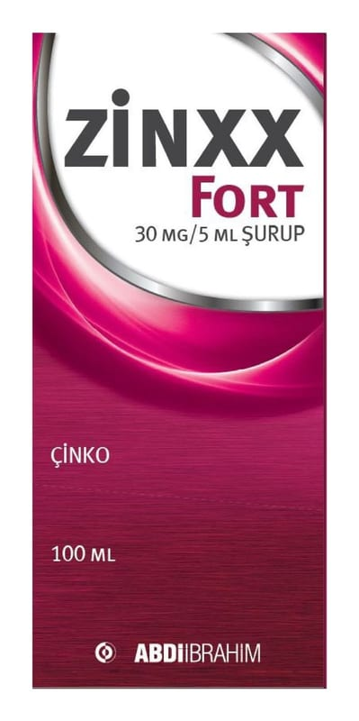

Zinxx Fort 30 mg/5 ml ŞURUP,100 ml

Ne için kullanılır
KT · Bölüm 1ZİNXX FORT, çinko içeren bir şuruptur. Bal rengi 100 mL’lik Tip III cam şişede, contalı polietilen kapak, 5 mL’lik ölçü kaşığı ve 5 mL’lik pipet ile beraber sunulur. Çinko eksikliğinin tedavisi ve önlenmesinde kullanılır.